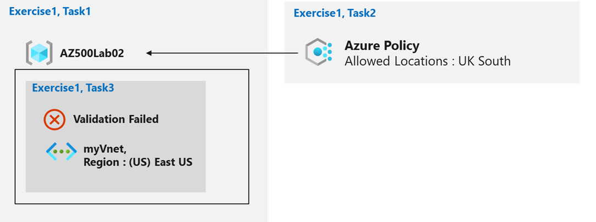

Lab 02: Azure Policy
Student lab manual
Lab scenario
You have been asked to create a proof of concept showing how Azure policy can be used. Specifically, you need to:
- Create an Allowed Locations policy that ensures resource are only created in a specific region.
- Test to ensure resources are only created in the Allowed location
For all the resources in this lab, we are using the East US region. Verify with your instructor this is the region to use for class.
Lab objectives
In this lab, you will complete the following:
- Exercise 1: Implement Azure Policy.
Azure Policy diagram

Instructions
Exercise 1: Implement Azure Policy
Estimated timing: 20 minutes
In this exercise, you will complete the following tasks:
- Task 1: Create an Azure resource group.
- Task 2: Create an Allowed Locations policy assignment.
- Task 3: Verify the Allowed Locations policy assignment is working.
Task 1: Create a resource group for the lab.
In this task, you will create a resource group for the lab.
-
Sign-in to the Azure portal
https://portal.azure.com/.Note: Sign in to the Azure portal using an account that has the Owner or Contributor role in the Azure subscription you are using for this lab.
-
Open the Cloud Shell by clicking the first icon in the top right of the Azure Portal. If prompted, select PowerShell and Create storage.
-
Ensure PowerShell is selected in the drop-down menu in the upper-left corner of the Cloud Shell pane.
-
In the PowerShell session within the Cloud Shell pane, run the following to create a resource group (verify with your instructor regarding the value of the location parameter):
New-AzResourceGroup -Name AZ500LAB02 -Location 'East US' Confirm Provided resource group already exists. Are you sure you want to update it? [Y] Yes [N] No [S] Suspend [?] Help (default is "Y"): Y -
In the PowerShell session within the Cloud Shell pane, type Y and press the Enter key.
-
In the PowerShell session within the Cloud Shell pane, run the following to list resource groups to verify that the new resource group was created:
Get-AzResourceGroup | format-table -
Close the Cloud Shell.
Task 2: Create an Allowed Locations policy assignment.
In this task, you will create an Allowed Locations policy assignment and specify which Azure regions the policy can use.
-
In the Azure portal, in the Search resources, services, and docs text box at the top of the Azure portal page, type Policy and press the Enter key.
-
On the Policy blade, in the Authoring section, select Definitions.
-
Take a minute to browse the built-in definitions. Use the Category drop-down to filter the list of policies.
-
In the Search text box, type Allowed locations.
Note: The Allowed locations policy allows you to restrict location of resources, not resource groups. To restrict locations of resource groups, you can use the Allowed locations for resource groups policy.
-
Click the Allowed locations policy definition to display its details..
Note: This policy definition takes an array of locations as parameters. A policy rule is an ‘if-then’ statement. The ‘if’ clause checks if the resource location is included in the parameter list, and if not, the ‘then’ clause denies the resource creation or, for existing resources, marks them as non-compliant.
-
On the Allowed locations blade, click Assign.
-
On the Basics tab of the Allowed locations blade, click the Ellipsis (…) button next to the Scope text box and, on the Scope blade, specify the following settings:
Setting Value Subscription the name of you Azure subscription Resource group AZ500LAB02 -
Click Select.
-
On the Allowed locations blade, on the Basics tab, specify the following settings (leave others with their defualt values):
Setting Value Assignment name Allow UK South for AZ500LAB02 Description Allow resources to be created in UK South Only for AZ500LAB02 Policy enforcement Enabled -
Click Next.
-
On the Parameters tab of the Allowed locations blade, in the Allowed locations drop-down list, select UK South as the only allowed location.
Note: You can select more than one location. If the policy required a different set of parameters, this tab would provide those selections.
-
Click Review + create, followed by Create to create the policy assignment.
Note: You will see a notification that the assignment was successful, and that the assignment might take around 30 minutes to complete.
Note: The reason the Azure policy assignment might take up to 30 minutes to take effect is that is has to replicate globally. Typically this takes only a few minutes. If the next task fails, simply wait a few minutes and attempt its steps again.
Task 3: Test the Allowed Locations policy assignment
In this task, you will test the Allowed Locations policy assignment.
-
In the Azure portal, in the Search resources, services, and docs text box at the top of the Azure portal page, type Virtual networks and press the Enter key.
-
On the Virtual Networks blade, click + Create.
Note: First, you will try to create a virtual network in East US. Since this is not an allowed location, the request should be blocked.
-
On the Basics tab of the Create virtual network blade, specify the following settings (leave others with their defualt values):
Setting Value Resource group AZ500LAB02 Name myVnet Region East US -
Click Review + create.
-
On the Review + create tab of the Create virtual network blade note the Validation failed message.
Note: If the Validation Failed warning does not appear, click Previous and wait a few more minutes.
-
On the Basics tab, click the error message link to open the Policy Assignment blade. You will see the policy assignment that restricts the location.
-
Close the Policy Assignment blade, on the Create virtual network blade, click the Basics tab, and, in the Region drop-down list, select UK South.
-
Click Review + create, verify that validation passed, click Create, and verify that the virtual network was created successfully.
Exercise results: In this exercise, you learned to apply an Azure policy by selecting a built-in policy definitions and assigning it to a resource group.
Clean up resources
Remember to remove any newly created Azure resources that you no longer use. Removing unused resources ensures you will not incur unexpected costs.
-
In the Azure portal, open the Cloud Shell by clicking the first icon in the top right of the Azure Portal. If prompted, click Reconnect.
-
In the PowerShell session within the Cloud Shell pane, run the following to remove the resource group you created in this lab:
Remove-AzResourceGroup -Name "AZ500LAB02" -Force -AsJob -
Close the Cloud Shell pane.
-
In the Azure portal, in the Search resources, services, and docs text box at the top of the Azure portal page, type Policy and press the Enter key.
-
In the Authoring section, select Assignments.
-
In the list of assignments, select the name of the Allowed Locations policy that you created in this lab.
-
On the policy assignment, select Delete assignment, and then select Yes.